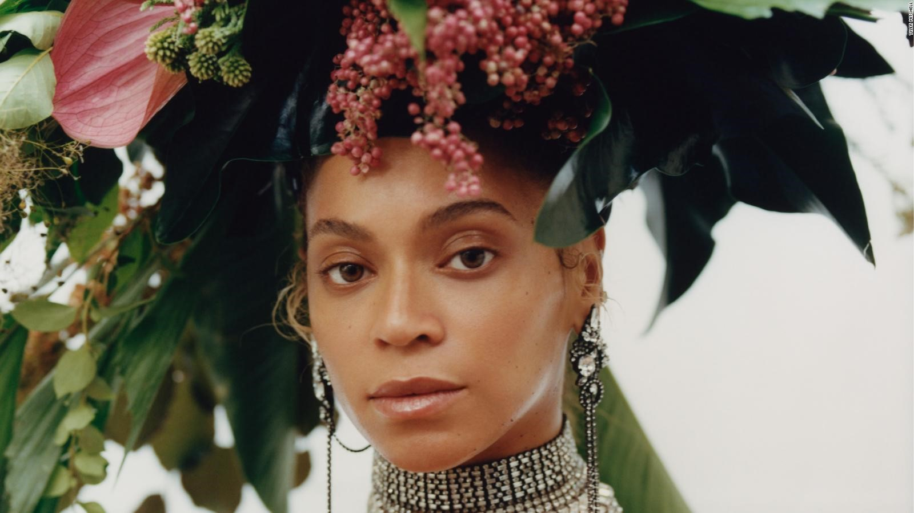

1995 წლის 12 აპრილს ოცდამეერთე საუკუნის კულტურულ ხელოვნებაში ერთ-ერთი ყველაზე დიდი და მნიშვნელოვანი ფიგურა - ტაილერ მიტჩელი დაიბადა.
ტაილერისა და ფოტოგრაფიის ურთიერთობა მეცხრე კლასში, სკეიტბორდის ვიდეოების კეთებით დაიწყო. 20 წლის ასაკში კი უკვე მისი პირველი წიგნის
- „El Paquete" -ს ავტორი იყო. მიუხედავად იმისა, რომ ტაილერს ადრეულ ასაკშივე დიდი წარმატებები ჰქონდა, ნიუ იორკის ხელოვნების
სკოლაში სწავლა გააგრძელა და 2017 წელს დაამთავრა. ამ პერიოდში მისი ერთ-ერთი ყველაზე მნიშვნელოვანი პროექტი Teen Vogue-თან ერთად განხორციელებული
იარაღის კონტროლის თინეიჯერი აქტივისტების დოკუმენტირება და ფოტოგრაფირება იყო. პროექტის მთავარი მიზანს თინეიჯერების მიერ მასობრივი სროლების გაპროტესტება და უკეთესი
მომავლისათვის ბრძოლა წარმოადგენდა.
სწორედ ამის შემდეგ იწყება მისი კარიერული მოღვაწეობის პიკი. ტაილერის სახელთანაა დაკავშირებული ფერადკანიანების კულტურული ხელოვნების ერთ-ერთი ყველაზე მნიშვნელოვანი მოვლენა. 2018 წელს პირველად, ჟურნალ Vogue-ს 126 წლიან ისტორიაში, მისი გარეკანი აფრო-ამერიკელმა ფოტოგრაფმა - ტაილერ მიტჩელმა გადაიღო. მეტიც, მიტჩელის კადრში ყველა დროის საუკეთესო მომღერალი და უმნიშვნელოვანესი ფიგურა - ბიონსე ჯიზელ ნოულს-კარტერი იყო.

„ფოტოგრაფები იმისთვის ცხოვრობენ, რომ ამ ყდის გადაღების საშუალება ჰქონდეთ. ეს ყველაფერი სრულიად დაუჯერებელი იყო და თავს ისე ვგრძნობდი, თითქოს მთელი ცხოვრება ამ ზარისთვის ვარსებობდი.“ - ამბობს მიტჩელი.

ამას გარდა, ახალგაზრდა ფოტოგრაფს ისეთ კომპანიებთან ჰქონდა ურთიერთობა, როგორებიცაა: Marc Jacobs, Nike, Converse, Givenchy, Zara და სხვა. მისი ნამუშევრები მოიცავს მოდის ფოტოგრაფიას, ხელოვნების ფოტოგრაფიას და ფილმის პროექტებს, რომლებიც ძირითადად ავტობიოგრაფიულ თემებს ეხება.
ტაილერ მიტჩელი ცნობილია მისი მონათხრობი ფერადკანიანი ხალხის ისტორიებით, რომელსაც თავად „შავი უტოპიური ხედვა“ უწოდა. მისი პირველი გამოფენა, რომელიც 2019 წელს გაიმართა, სახელად „მე შემიძლია თავი კარგად გაგრძნობინო“/ „I Can Make You Feel Good” მოიცავს ფერადკანიანი ხალხის ყოველდღიურ ცხოვრებას, მათ თავგადასავლებსა და ისტორიებს.
ავტორი: ანანო ჩიხლაძე